Compound AI 全数据通路浮点存内计算零基础精讲：多个小模型，一套全存内硬件 A 51.6TFLOPs/W Full-Datapath CIM Macro Approaching Sparsity Bound and <2⁻³⁰ Loss for Compound AI（ISSCC 2025 · Paper 14.4）
Compound AI（复合式 AI）是 2024 年 Berkeley 提出的新范式：把多个专精小模型组合起来，精度不输单个巨模型（例：RevCol 融合多个卷积模型，ImageNet 上比 7.2B 巨模型还高 1.64%）。这为边缘部署打开了新路——但传统 FP-CIM 有三块绊脚石：高斯分布假设失效（精度掉 >5%）、部分和/残差搬移费电（占 26~72%）、稀疏模式不匹配（加速打折扣）。
这篇清华尹首一组的论文用一个 224kb 异质 CIM 宏（28nm）逐一解决：
- MantissaEE 格式 + 后乘积对齐：把 FP16 尾数按指数低位“折叠”成 16b MantissaEE（兼容 FP8/INT8），乘法后再对齐（误差只在累加时发生一次）→ FP16-MAC 误差 < 2⁻³⁰、SER 60.1 dB；
- 全数据路径存内：MAC（ME-CIM）+ 路由（NIM）+ 累加（AIM）全在内存里完成，部分和/残差就地累加不搬移；输入 2C、权重 SM 的混合格式把翻转降到最低（功耗 −6.3%~42.7%）；
- NIM + 动态启动器：静态 2:4 剪枝 + 动态 Booth 池双管齐下 → 平均加速 5.30×，达到稀疏理论上限的 92.6%。
实测：峰值 51.6 TFLOPS/W、2.44 TFLOPS/mm²，复合模型上平均 5.55~12.54 TFLOPS/W。
- Compound AI = 芯片的多模型并行：每个小模型可以部署在独立计算核上（本宏 16 个核），核间只需少量融合运算——这正好绕开“单个巨模型放不下”的容量问题。
- “后对齐”为什么更准：传统浮点 CIM 先按指数差“预对齐”再乘，移位误差被注入每个乘积（放大 N 次）；本论文先算完乘积再对齐，误差只在累加那一步出现一次——误差从 2⁻¹ 降到 2⁻³⁰，差了 10 亿倍。
- “全数据路径在存内”省的是搬移：部分和/残差累加是 CIM 最容易忽视的功耗大头（26~72%）。把累加也做进内存（AIM），数据不出内存，搬移功耗直接归零。
§0.1摘要逐句精读
| 原文（摘录） | 人话解释 |
|---|---|
| “The compound-AI combines several specialized small models to achieve matched or even superior accuracy… RevCol fuses multiple convolutional models and surpasses the 7.2B-parameter monolithic LLM by 1.64%” | Compound AI：多个专精小模型组合，精度不输巨模型（RevCol 例子）。这是“边缘也能跑高精度 AI”的前提。 |
| “Previous FP CIMs rely on a Gaussian data distribution… compound-AI employs diverse models, with multiple data distributions, leading to an accuracy degradation of more than 5%” | 挑战 1：旧方案假设数据高斯分布（集中在均值附近）；复合模型多种分布 → 高斯假设失效 → 精度掉 5% 以上。 |
| “partial-sum/residual accumulation requires data movement and accounts for 26-72% power consumption” | 挑战 2：部分和/残差累加的数据搬移占功耗 26~72%（位串行 CIM 更严重）。 |
| “A heterogeneous-CIM macro… allows post-product alignment to approach < 2⁻³⁰ accuracy loss. The proposed mantissaEE format supports different data precision for lossless computing” | 方案 1：异质 CIM + 后乘积对齐 → 误差 < 2⁻³⁰；MantissaEE 格式兼容多种精度无损计算。 |
| “The full data path is computed in memory… a hybrid format is explored to achieve peak-energy efficiency” | 方案 2：全数据路径在存内计算（含累加），混合格式追求峰值能效。 |
| “A network-in-memory (NIM) and a dynamic launcher capture static and dynamic sparsity opportunities, achieving >2.7× performance improvement” | 方案 3：NIM + 动态启动器捕获静态/动态稀疏 → 性能提升 >2.7×。 |
§0.2论文的核心贡献清单
- 异质 CIM + 后乘积对齐：尾数乘法与指数累加并行，乘积后再对齐 → FP16-MAC 误差 < 2⁻³⁰、SER 60.1 dB（3.14×）、精度损失平均降 11.07×；
- MantissaEE 格式：16b 统一格式兼容 FP16/FP8/INT8，指数分布折叠、对齐位宽减小；
- 全数据路径存内：AIM 累加存内（INT32 −38.3%、FP32 −15.4% 功耗）；混合 2C×SM 格式翻转 −5.2~47.5%、功耗 −6.3~42.7%；
- NIM + 动态启动器：静态 2:4（2×）+ 动态 Booth 池（2.65×）= 5.30× 平均加速，达理论上限 92.6%；
- 无预充电 10T 位单元：稀疏数据读 0 不耗电，比 8T 省 1.95×（面积 +1.26×）；
- 实测：51.6 TFLOPS/W、2.44 TFLOPS/mm²，FoM（SER×吞吐/面积/功耗）比前作 FP-CIM 高 >5.72×。
完全零基础：按 01→09 顺序读，重点玩 3 个交互仿真、看 3 个视频，约 60 分钟。这篇的“后乘积对齐”和“全数据路径存内”是本文最值得反复咀嚼的两个设计思想。
§1背景：Compound AI —— 用“组合”替代“巨型化”
模型越大越准，但参数爆炸让边缘芯片装不下、跑不动。Compound AI 反其道而行：用多个“专精小模型”组合——每个模型只负责一个子任务（视觉、语言、注意力等），模型间做少量融合。Berkeley 的博客（2024）把这种转变叫“从单一模型到复合 AI 系统”。对芯片设计者来说，这意味着：
- 每个小模型都能独立部署（本宏 16 个核正好对应 16 个小模型）；
- 核间只需“加法器级”的融合（残差、部分和），通信开销小；
- 总精度看组合效果，不依赖单个巨模型。
但复合模型也给 CIM 带来新问题：多个模型 = 多种数据分布、多种稀疏模式、频繁的残差/部分和流动——这正是论文三大挑战的由来（§2）。
§2传统 FP-CIM 加速 Compound AI 的三大挑战
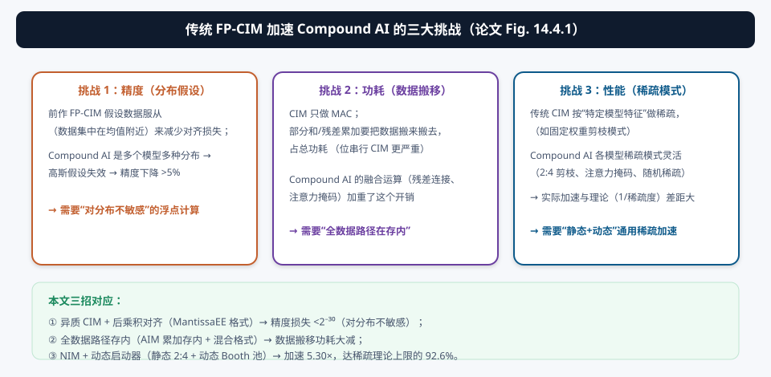
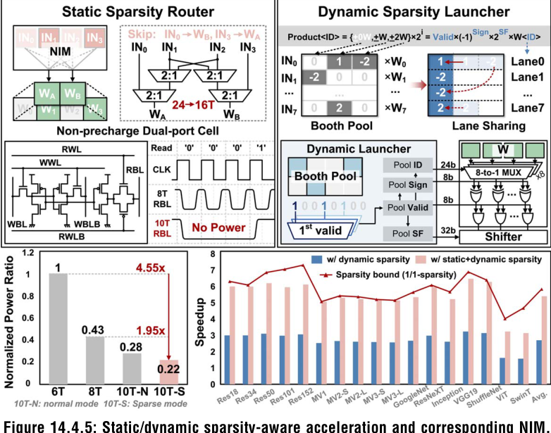
| 挑战 | 本质 | 本文对策 |
|---|---|---|
| ① 精度：分布假设 | 高斯假设 → 对齐损失在复合模型多种分布下放大（>5% 掉点） | MantissaEE + 后乘积对齐 → 误差 <2⁻³⁰ |
| ② 功耗：数据搬移 | 部分和/残差累加搬移占 26~72% 功耗 | 全数据路径存内（AIM 就地累加） |
| ③ 性能：稀疏模式 | 各模型稀疏模式不同，实际加速 < 理论 | NIM（静态 2:4）+ 动态启动器（动态 Booth 池） |
§3MantissaEE 格式：把指数“折叠”进尾数，一格式三精度
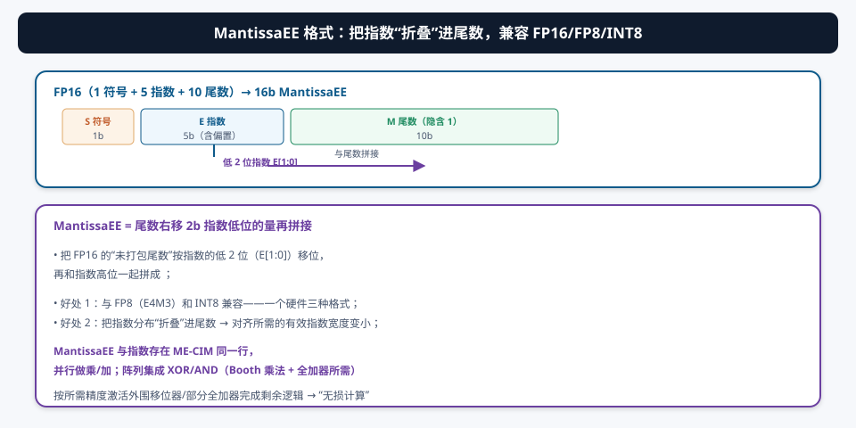
浮点 CIM 做乘法的难点在于“对齐需要知道指数差”。MantissaEE 的思路：把指数的低位直接“折进”尾数的移位里，形成一个统一宽度的表示：
- 兼容三种精度：FP16 的尾数移位后得到 16b MantissaEE；FP8（E4M3）和 INT8 可以直接映射到同一宽度 → 一个 ME-CIM 阵列服务三种格式；
- 指数分布折叠：对齐所需的有效指数宽度变小（低位已经进了尾数），后续对齐移位量减小；
- 同排存储：MantissaEE 与指数存在 ME-CIM 同一行，并行做乘/加；阵列里集成 XOR/AND（Booth 乘法 + 全加器所需的逻辑），按精度激活外围移位器/部分全加器完成剩余逻辑。
§4创新①：后乘积对齐 —— 把误差从 2⁻¹ 压到 2⁻³⁰
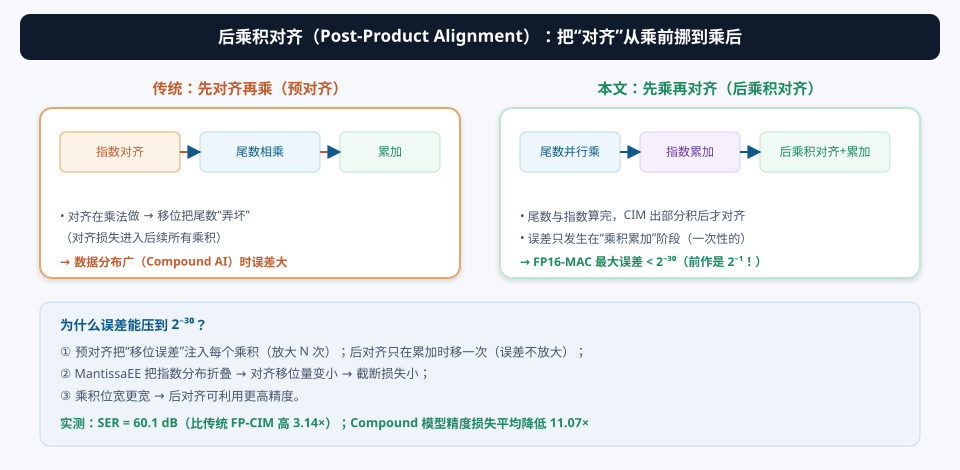
传统浮点 CIM 的处理顺序是：指数对齐 → 尾数相乘 → 累加。对齐时的移位会“截断”尾数——这个误差被注入到每一个乘积里，N 个乘积就放大 N 次。当数据分布很广（Compound AI 的多模型场景），指数差很大，对齐损失尤其严重。
本文把顺序改成：尾数并行相乘 + 指数并行累加 → CIM 出部分积 → 后乘积对齐 → 累加：
- 尾数乘法在 CIM 里并行做（不涉及对齐，无截断）；
- 指数加法器算出每个乘积的指数和；
- CIM 生成部分积后，才按指数差后对齐——误差只在这一步出现一次；
- MantissaEE 让对齐移位量变小 + 乘积位宽更宽 → 截断损失进一步下降。
证明概念（proof-of-concept）：FP16-MAC 最大误差率 < 2⁻³⁰（前作 FP 宏是 2⁻¹，差约 10 亿倍）。实测 SER（信号误差比）= 60.1 dB（3.14× 于传统 FP-CIM）；应用在 ResNet/MobileNet/注意力等复合模型上，精度损失平均降低 11.07×。
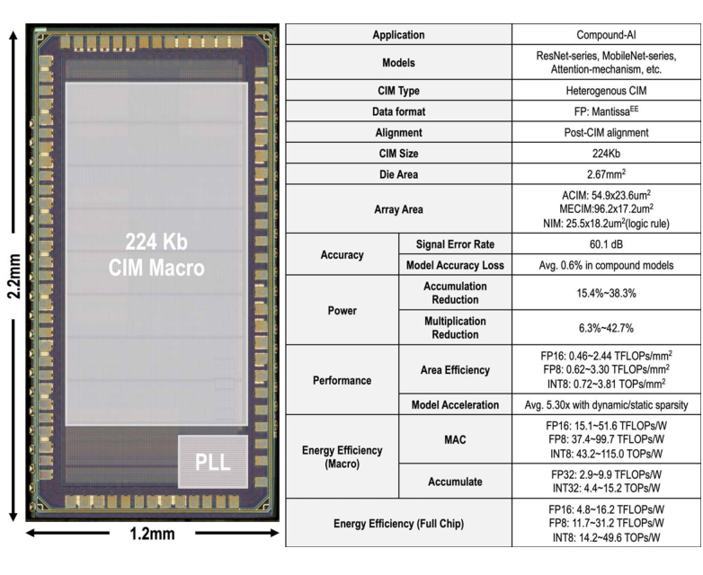
§5创新②：全数据路径存内 —— 累加也做进内存
5.1 AIM（累加存内）：部分和/残差就地累加
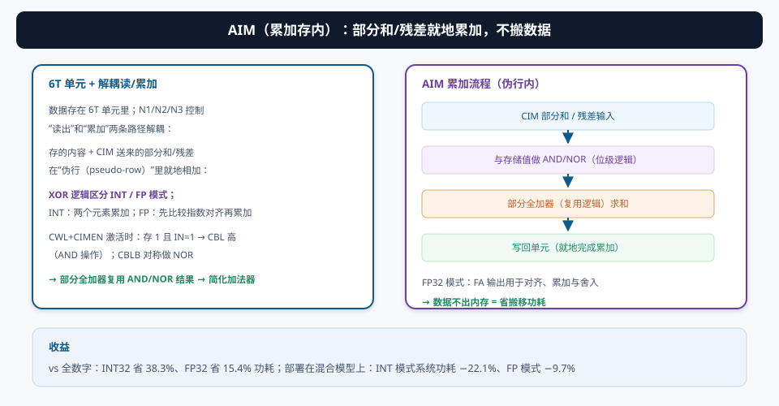
传统 CIM 只做 MAC，部分和/残差要搬回累加器（占 26~72% 功耗）。本文的 AIM（Accumulate-In-Memory）把累加也搬进存储：
- 6T 单元 + N1/N2/N3：读与累加路径解耦；CWL+CIMEN 激活时，存储值（1）+ 输入（1）→ CBL 拉高（AND 操作），CBLB 对称做 NOR；
- 部分全加器：复用 AND/NOR 结果简化加法器；求和写回单元 → 就地完成累加；
- INT/FP 双模：XOR 区分；FP 模式多一步“指数比较对齐”（FP32 时 FA 输出用于对齐/累加/舍入）。
vs 全数字方案：INT32 省 38.3%、FP32 省 15.4% 功耗；部署在混合模型上，系统功耗 INT 模式 −22.1%、FP 模式 −9.7%。
5.2 混合格式乘法：输入 2C + 权重 SM
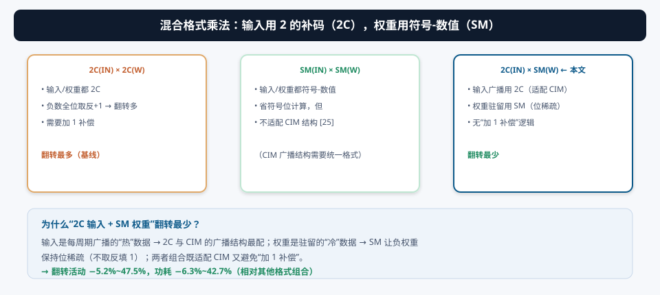
乘法的数据格式组合直接影响翻转功耗：输入是每周期广播的“热”数据 → 用 2 的补码（2C）适配 CIM 广播结构；权重是驻留的“冷”数据 → 用符号-数值（SM）让负权重保持位稀疏。这个组合既免去 SM×SM 对 CIM 的不适配，又避免了 2C×2C 的“加 1 补偿”逻辑——翻转活动 −5.2%~47.5%、功耗 −6.3%~42.7%。
§6创新③：NIM + 动态启动器 —— 静态与动态稀疏双管齐下
静态稀疏（权重剪枝、注意力掩码）：用业界最通用的 2:4 压缩（4 个权重保留 2 个），保持跨模型兼容。NIM（网络存内）按匹配权重从 4 个单元中选 2 个输入元素，并排除两条“不可能路径”降低网络复杂度；读出的数据再 Booth 编码做权重乘法。
动态稀疏（激活/编码项的随机稀疏）：每个编码项有 4 个字段——ID（选择匹配权重）、sign（SM 符号翻转）、valid（有效掩码）、SF（移位偏移）。valid 的分布是随机的（动态稀疏）。两个机制处理：
- BPLS（Booth 池-道共享）：8/4 个并行输入 × 4/8 个编码项构成 Booth 池，把非零项重排到空闲道 → 消除“稀疏导致的空道”，逼近理想加速；
- 动态启动器：收集有效 Booth 池字段，并行前导 1 检测器逐个找出有效项，只对有效项做选择性 Booth 编码乘法（ID 选权重、XOR 翻符号、AND 掩码、SF 提供移位）。
静态 2× + 动态 2.65× = 平均 5.30× 加速（>2.7× 于前作），达到稀疏理论上限（1/稀疏度）的 92.6%——“实际与理论加速的差距”被基本抹平。
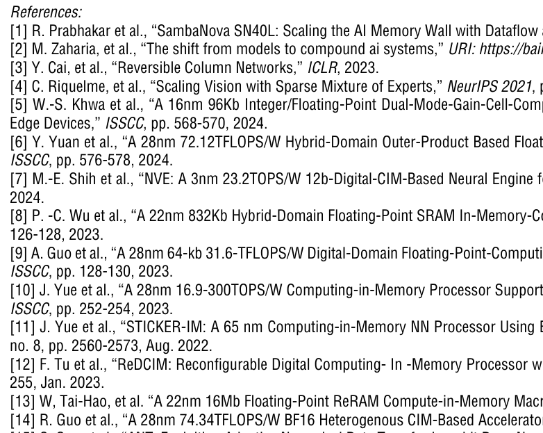
§7系统架构与数据流：16 个核部署 16 个模型
- 16 个异质 CIM 核：每个核部署一个 Compound AI 小模型；核间通过核间加法器做融合（残差/组合）；
- CIM-set：1.375kb ME-CIM（尾数-指数存内计算）执行 4 个并行 FP16 或 8 个并行 FP8 MAC；0.25kb NIM + 动态启动器做稀疏感知加速；
- AIM（0.5kb）：部分和与残差的就地累加；
- 全数据路径存内：MAC → 路由 → 累加都在内存内部完成，只有最终结果出内存。
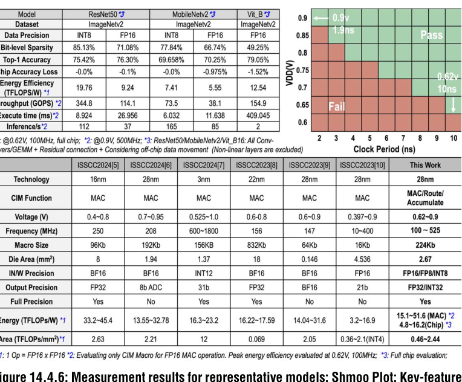
稀疏加速让读出的数据流“很多 0”。传统 SRAM 读前要预充电（每个周期都花电）；本文的 10T 单元用反相器替代预充电，RBL 不变（读 0）就不耗电——和稀疏数据天然匹配。比 8T 双端口省 1.95× 功耗（面积仅 +1.26×），是本宏 51.6 TFLOPS/W 峰值能效的重要来源（图 d09）。
§8实测与对比：28nm 芯片的成绩单
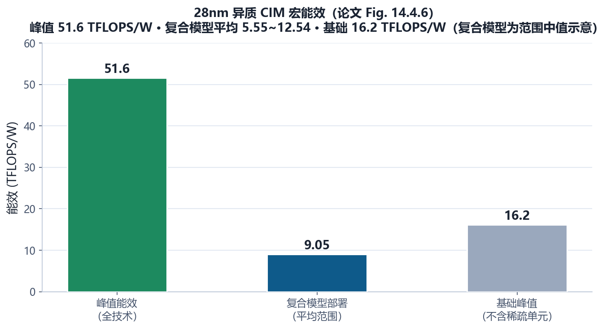
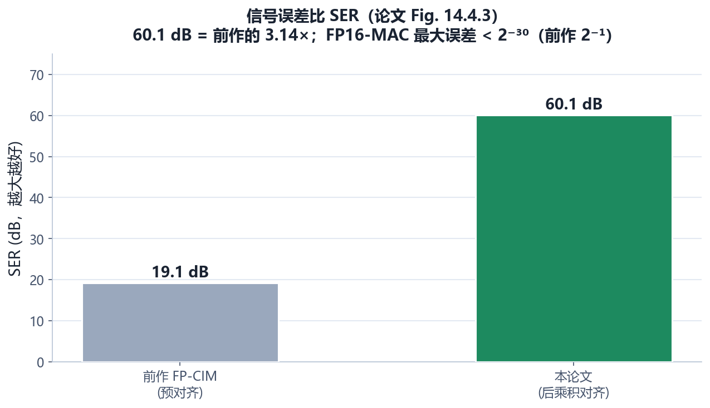
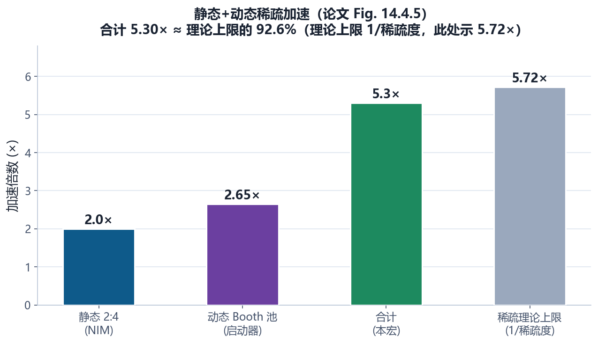
- 工艺/面积：28nm，2.67 mm²，224kb 异质宏；
- 能效：峰值 51.6 TFLOPS/W、2.44 TFLOPS/mm²；复合模型平均 5.55~12.54 TFLOPS/W；
- 精度：SER 60.1 dB、误差率 <0.6%（所有测试模型平均）；
- FoM（SER × 系统吞吐/面积/功耗）：比前作 FP-CIM 高 >5.72×。
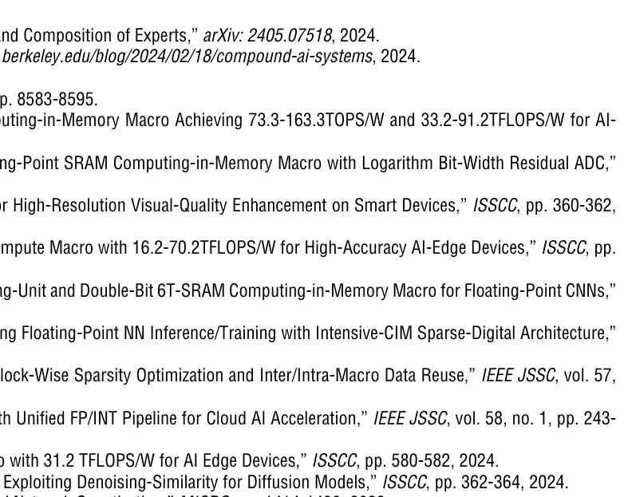
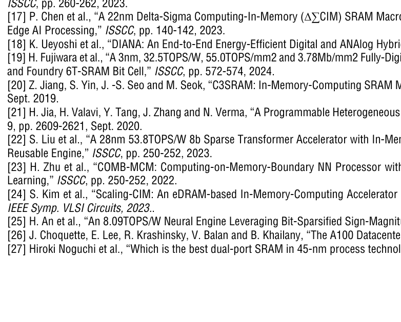
① 峰值 51.6 TFLOPS/W 依赖“稀疏数据 + 无预充电单元”的组合条件，和 16.2 TFLOPS/W 的基础值差异巨大——读论文先弄清“哪个数字在什么条件下测得”；② 2⁻³⁰ 是“证明概念”下的误差上界，实际 SER 60.1 dB 是 64×64 采样的平均值；③ Compound AI 的“5.55~12.54 TFLOPS/W”跨模型范围说明复合模型的负载差异很大，性能报告要看分布而不是只看峰值。
§9未来研究方向 · 术语表 · 参考资料
9.1 未来研究方向
- Compound AI 的系统化编译与调度：16 个核怎么分配模型、核间融合怎么调度、动态精度怎么选——做一个“Compound AI → 多核 CIM”的自动编译器（模型划分、位宽分配、稀疏映射），是软件-硬件协同的下一个大问题；
- 后乘积对齐的通用化：本文针对 FP16/FP8。把后乘积对齐推广到 BF16/MXFP/FP32、以及“块浮点”场景；MantissaEE 的“指数折叠”能否扩展成更一般的格式族？
- 更多“存内算子”：AIM 把累加做进了内存。下一步：把归一化、激活、甚至 softmax 都“存内化”，让“全数据路径在存内”名副其实——但每个算子存内化的面积/精度代价要仔细权衡；
- 动态稀疏的在线检测：动态启动器目前靠“valid 字段”标记。能否在 CIM 内部实时检测激活稀疏（零检测）并动态跳过？配合 10T 无预充电单元，能效还能再翻；
- 大模型局部性利用：LLM 的注意力有“局部性”（相邻 token 相关性高）。把 Compound AI 的思想和 LLM 推理结合：不同 token/头分给不同核，核间只做必要的融合——这是边缘 LLM 的潜在路线；
- 工艺与 3D 集成：28nm → 先进节点；AIM/NIM 这类“存内逻辑”可以配合 3D 堆叠（08 号论文路线），把“存内数据路径”扩展到多层。
9.2 术语表
- Compound AI（复合式 AI）
- 多个专精小模型组合的系统，精度可匹敌巨模型。
- MantissaEE
- 本文格式：FP16 尾数按指数低 2 位折叠成 16b，兼容 FP8/INT8。
- 后乘积对齐（Post-Product Alignment）
- 先乘后对齐；误差只在累加时出现一次（<2⁻³⁰）。
- 预对齐（Pre-Alignment）
- 传统先对齐再乘；移位误差注入每个乘积。
- SER（Signal-to-Error Ratio）
- 信号误差比 = 10log10(信号/误差)，本宏 60.1 dB。
- AIM（Accumulate-In-Memory）
- 累加存内：部分和/残差就地累加，数据不出内存。
- 伪行（Pseudo-Row）
- AIM 中执行 AND/NOR + 部分全加的行结构。
- ME-CIM（Mantissa-Exponent CIM）
- 尾数-指数存内计算单元（1.375kb）。
- 混合格式（Hybrid Format）
- 输入 2C + 权重 SM：翻转最少、无加 1 补偿。
- NIM（Network-In-Memory）
- 网络存内：2:4 稀疏路由（静态）。
- 动态启动器（Dynamic Launcher）
- 收集有效 Booth 池字段、前导 1 检测、选择性乘法（动态稀疏）。
- BPLS（Booth Pool-Lane Sharing）
- Booth 池-道共享：把非零项重排到空闲道。
- 2:4 压缩
- 4 个权重保留 2 个的静态剪枝（GPU 通用格式）。
- 无预充电位单元（10T）
- 用反相器替代预充电；读 0 不耗电（省 1.95×）。
- 异质 CIM 核
- 每核部署一个专精模型，核间加法器融合。
9.3 参考资料
- Z. Yue, X. Xiang, et al., “A 51.6TFLOPs/W Full-Datapath CIM Macro Approaching Sparsity Bound and <2⁻³⁰ Loss for Compound AI,” ISSCC 2025, Paper 14.4. DOI: 10.1109/ISSCC49661.2025.10904702
- M. Zaharia et al., “The shift from models to compound AI systems,” Berkeley AI Research Blog, 2024.（Compound AI 概念 [2]）
- Y. Cai et al., “Reversible Column Networks,” ICLR 2023.（RevCol [3]）
- J. Yue et al., “STICKER-IM: A 65nm CIM NN Processor Using Block-Wise Sparsity Optimization…,” IEEE JSSC, vol. 57, no. 8, 2022.（[11]）
- F. Tu et al., “ReDCIM: Reconfigurable Digital CIM Processor with Unified FP/INT Pipeline…,” IEEE JSSC, vol. 58, no. 1, 2023.（[12]）
- J. Choquette et al., “The A100 Datacenter GPU and Ampere Architecture,” ISSCC 2021, pp. 48-50.（2:4 稀疏 [26]）
- H. Noguchi et al., “Which is the best dual-port SRAM in 45-nm… 8T, 10T single end, and 10T differential,” ICICDT 2008.（10T 单元 [27]）